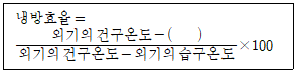
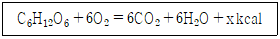
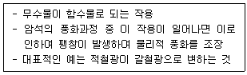

시설원예기사 (2003-08-10 기출문제)
1과목: 원예학개론
1. 다음 중 MM 106 대목의 특성인 것은?
- 극왜화성 대목이다.
- 발근력, 번식력이 약하다.
- 흡지의 발생이 많다.
- 면충 저항성 대목이다.
(정답률: 알수없음)

2. 생태적 방제법(ecolagical control method)이 아닌 것은?
- 내병, 내충성 품종의 이용
- 기주식물(寄主植物)의 제거
- 환경조건 개선으로 건전한 수세 유지
- 점화유살(點火誘殺)
(정답률: 알수없음)
3. 델라웨어의 GA 처리시기와 농도로 가장 효과적인 것은?
- 만개기에 150 ppm
- 개화전 3일과 10일에 100 ppm
- 개화직전에 2회 150 ppm
- 개화전 13일과 개화후 10일에 100 ppm
(정답률: 알수없음)
4. 다음 수형 중 사과나무 밀식재배에 적합한 정지법은?
- 변칙주간형 정지법
- 개심자연형 정지법
- 오올백형 정지법
- 방추형 정지법
(정답률: 알수없음)
5. 고울던 딜리셔스에서 선발된 스퍼어 타입의 사과품종은?
- 밀러 스퍼(Miller Spur)
- 레드 스퍼(Red Spur)
- 스타 크림손(Star Krimson)
- 고울드 스퍼(Gold Spur)
(정답률: 알수없음)
6. 다음 중 사과나무 하기전정(夏期剪定)의 효과가 아닌 것은?
- 수관(樹冠)을 작게 한다.
- 광선투과를 높인다.
- 수형구성에 도움이 된다.
- 뿌리의 발달이 좋아진다.
(정답률: 알수없음)
7. 다음 화훼류 중 상대적 단일식물은?
- 다알리아, 매리골드
- 아스파라거스, 시클라멘
- 카네이션, 팬지
- 히야신스, 제라니움
(정답률: 알수없음)
8. 단일 조건에 의해서 구가 형성되는 것은?
- 튜울립
- 다알리아
- 수선
- 시클라멘
(정답률: 알수없음)
9. 다음 설명 중 옳지 않는 것은?
- 인경은 잎이 변화된 것으로 모구가 소실되고 신구가 형성되는 것도 있다.
- 구경류는 대부분의 모구가 소실되고 신구가 형성된다.
- 괴경은 부정형으로 disk가 있다.
- 괴근은 뿌리가 비대된 것이며 crown이 있다.
(정답률: 알수없음)
10. 국화의 차광 재배에서 차광 개시 후 며칠 정도이면 꽃눈이 분화하는가?
- 3 ∼ 5일
- 7 ∼ 10일
- 15 ∼ 18일
- 20 ∼ 23일
(정답률: 알수없음)
11. 글라디올러스의 일반적인 억제 재배 방법은?
- 에틸렌 클로로 히드린 처리한다.
- 30℃정도의 고온조건으로 재배한다
- 15시간 정도의 장일 조건으로 재배한다.
- 저온 건조 저장으로 정식을 늦게 한다.
(정답률: 알수없음)
12. 큐어링(curing)의 목적은?
- 저장 중의 부패 방지
- 화아분화 촉진
- 휴면 타파
- 맹아 억제
(정답률: 알수없음)
13. 화훼재배에 있어서 일반적으로 관수량을 줄여야 하는 시기는?
- 발아기
- 발육기
- 화아분화기
- 개화기
(정답률: 알수없음)
14. 다음 양파의 인경비대에 대한 설명 중 가장 옳은 것은?
- 고온장일에서 촉진된다.
- 만생종 품종은 장일조건보다 고온이 촉진적이다.
- 저온단일에서 촉진된다.
- 조생종은 단일조건에서 촉진된다.
(정답률: 알수없음)
15. 딸기의 화아분화에 대한 설명으로 가장 옳은 것은?
- 아무리 고온상태라 하더라도 단일처리를 하면 꽃눈이 분화된다.
- 딸기의 화아분화는 3∼5℃이하에서만 일어난다.
- 아무리 장일상태라 하더라도 저온처리만 충분하면 꽃눈이 분화된다.
- 사철딸기는 보통 딸기보다도 화아분화 온도가 낮다.
(정답률: 알수없음)
16. 채소에서 당질의 소모와 직결되어 일어나는 현상은?
- 열근 현상
- 기근 현상
- 바람들이 현상
- 비대 발육 현상
(정답률: 알수없음)
17. 다음 채소 중 근계(根系)가 가장 큰 것은?
- 시금치
- 무
- 토마토
- 파
(정답률: 알수없음)
18. 토란재배에서 북주기(培土)를 하는데 그 주된 목적은 무엇인가?
- 연백(軟白)
- 도복 방지
- 분구 억제
- 목부분 착색 방지
(정답률: 알수없음)
19. 다음 중 호박의 육묘기간 동안 처리로서 암꽃착생을 촉진하는 처리는?
- 고온장일처리
- 고온단일처리
- 저온장일처리
- 저온단일처리
(정답률: 알수없음)
20. 꽃눈 분화 전후 저온에 의해서 생기는 토마토의 기형과(奇形果)는?
- 부패과(腐敗果)
- 난형과(亂形果)
- 곡과(曲果)
- 공동과(空胴果)
(정답률: 알수없음)
2과목: 시설원예학
21. 물 소비량을 계측하여 이를 기준으로 컴퓨터에 의해 관수간격과 관수량을 결정하는 방식은?
- feed back control 방식
- feed forward control방식
- manual control 방식
- open-loop control 방식
(정답률: 알수없음)
22. 다음은 온실의 기화냉각법에 의한 냉방효율을 계산하는 식이다. ( )안에 알맞은 것은?

- 유입기온
- 실내의 습구온도
- 실내습도
- 식물체온도
(정답률: 알수없음)
23. 동화산물의 전류에 가장 큰 영향을 미치는 환경요인은?
- 광
- 온도
- 수분
- 공기
(정답률: 알수없음)
24. 여러 가지 원예작물의 적정 탄산가스 농도 범위가 맞는 것은?
- 엽채류 500 - 1500ppm
- 근채류 1000 - 3000ppm
- 과채류 1500 - 3000ppm
- 화훼류 2000 - 3500ppm
(정답률: 알수없음)
25. 우리나라에서 시설원예 시작은 paper house로 1920년경 어떤 작목을 재배하였나?
- 배추
- 고추
- 상치
- 오이
(정답률: 알수없음)
26. 요수비율(증산계수)을 설명한 내용이다. 옳게 설명된 것은?
- 식물체 1g을 생산하는데 소요되는 생체중을 g으로 표시한다
- 식물체의 건물 1g을 생산하는데 소요되는 증산량(g)으로 표시한다
- 식물 생체 1g을 생산하는데 소요되는 증산량(g)으로 표시한다
- 식물 생체 1g을 생산하는데 소요되는 호흡량(g)으로 표시한다
(정답률: 알수없음)
27. 온실의 피복재면적 500m2, 지표면적 200m2, 환기창 면적 100m2, 피복재 투과율 0.9일 때 온실의 보온비는?
- 0.2
- 0.23
- 0.36
- 0.4
(정답률: 알수없음)
28. 다음과 같은 조건으로 육묘했을 때 실육묘 주수는? (단, 트레이 규격 28 × 56cm (8 × 16공), 묘상면적 폭 140cm, 길이 56m, 육묘 효율 95% 이다.)
- 64,500주
- 62,300주
- 60,800주
- 60,000주
(정답률: 알수없음)
29. 양분흡수의 이론 중에서 이온흡수의 수동적 흡수와 관련이 없는 설은?
- 확산설
- 집단류설
- 도난설(Donnan's theory)
- 운반류설
(정답률: 알수없음)
30. 온실에 피복하는 저렴한 피복재로서 장기간 사용하기 위해서 많이 피복하는 경질 필름은?
- 폴리에스테르(PET)
- 초산비닐(EVA)
- 유리섬유강화 아크릴(FRA)
- 폴리에틸렌(PE)
(정답률: 알수없음)
31. 토마토의 생리장해 중 석회결핍에 의하여 발생하는 장해는?
- 난형과
- 열과
- 배꼽썩음병
- 공동과
(정답률: 알수없음)
32. 전기전도도(EC)에 대한 설명이 적절한 것은?
- 배양액내의 각성분의 함량을 전기적으로 나타낸 것
- 배양액내의 유기 이온 농도의 적산량을 나타낸 것
- 배양액 내의 모든 이온농도에 따른 전극간의 전기 저항의 역수
- 배양액 내의 각 성분의 종류에 따른 전극간의 전기저항의 역수
(정답률: 알수없음)
33. 온실설계시 설계풍속과 설계적설심에 대한 재현기간은 내용년수와 안전도로부터 산출한다. 재현기간이 가장 큰 것은?
- 내용년수 10년, 안전도 50%
- 내용년수 15년, 안전도 50%
- 내용년수 15년, 안전도 70%
- 내용년수 20년, 안전도 70%
(정답률: 알수없음)
34. 태양고도가 낮은 지역에서 많이 사용될 수 있는 온실형태를 짝지은 것은?
- 양지붕형 온실, 외지붕형 온실
- 벤로형 온실, 연동형 온실
- 3/4형 온실, 외지붕형 온실
- 연동형 온실, 양지붕형 온실
(정답률: 알수없음)
35. 양액재배는 순수수경과 고형배지경으로 구분한다. 고형배지경에 속하는 것 ?
- 분무수경
- 박막수경
- 담액수경
- 폴리우레탄경
(정답률: 알수없음)
36. 다음 중 광합성에 가장 유효하고 광주기성에도 유효한 광선의 파장영역은?
- 1,000 ∼ 700nm
- 700 ∼ 610nm
- 610 ∼ 510nm
- 315 ∼ 280nm
(정답률: 알수없음)
37. 온실 외피복자재 중 열전도율이 낮고 충격에 강하고 굽힘강도가 높으면서 산란성이 높고 자외선 투과율이 낮은 자재는?
- FRP 판
- FRA 판
- MMA 판
- PET
(정답률: 알수없음)
38. 식물공장의 특징으로 가장 옳은 것은?
- 연작장해가 심하다.
- 단위면적당 생산량이 떨어진다.
- 외부기상조건의 영향을 많이 받는다.
- 생육속도가 빨라 재배기간이 단축된다.
(정답률: 알수없음)
39. 딸기에서 나타나는 기형과 발생률을 줄일 수 있는 가장 효과적인 방법은?
- 꿀벌방사
- GA 처리
- 엽면적 증대
- 적엽, 적과
(정답률: 알수없음)
40. 병에 감염되지 않은 식물에 생육상 영향을 끼치지 않을 정도로 약한 병원균을 접종시켜 그 병의 감염을 방지하게 된다. 그 방제법은?
- 저항성품종 육성법
- 접목법
- 바이러스 무병주 이용법
- 약독 바이러스 이용법
(정답률: 알수없음)
3과목: 재배학원론
41. 강광조건을 요구하는 토마토가 저광조건에서 나타나지 않는 현상은?
- 건물중 감소
- 잎이 커지고 엽육이 얇아짐
- 초장이 길어짐
- 착과율 증가
(정답률: 알수없음)
42. 풍속과 동압(動壓)과의 관계를 바르게 나타낸 것은?
- 동압은 풍속의 제곱에 비례한다.
- 동압은 풍속에 비례한다.
- 동압은 풍속의 제곱에 반비례한다.
- 동압은 풍속에 반비례한다.
(정답률: 알수없음)
43. 시설내의 지하부 환경 계측에 속하는 것은?
- 공기
- 일사량
- 풍속
- 지온
(정답률: 알수없음)
44. 미포화 습공기를 냉각하면 어떤 온도에서 포화상태가 된다. 이 때의 온도를 무슨 온도라 하는가?
- 건구온도
- 습구온도
- 절대온도
- 노점온도
(정답률: 알수없음)
45. 식물 엽의 광합성속도를 측정하는 방법이 아닌 것은?
- CO2 의 방출 또는 O2의 흡수속도를 측정하는 방법
- CO2의 흡수속도를 측정하는 방법
- O2의 방출속도를 측정하는 방법
- 건물생산이나 탄수화물의 생산속도를 측정하는 방법
(정답률: 알수없음)
46. 온실 작물 생산을 위한 토양환경 중 염류집적 방지대책으로 가장 적합한 것은?
- 다량의 관수에 의한 염류용탈
- 온실 밀폐 건조 조건 유지
- 기비 위주의 재배 관리
- 다비 재배방법 도입
(정답률: 알수없음)
47. 시설원예의 환경조절을 위한 기본적인 과정이 아닌 것은?
- 환경 조건과 작물 반응에 대한 정량화
- 시설내의 환경 형성의 메카니즘 해석
- 환경 조절에 의한 작물 반응의 제어
- 복합 환경제어시스템의 체계적 구축
(정답률: 알수없음)
48. 식물체내의 수분 퍼텐셜을 측정하는 사이크로 미터법은 무엇을 측정하여 수분퍼텐셜을 산정하는가?
- 상대습도
- 절대습도
- 온도
- 압력
(정답률: 알수없음)
49. 다음 중 온도계의 종류와 측정원리가 다른 것은?
- 유리봉상온도계 - 수은, 알코올 등의 체팽창
- 바이메탈온도계 - 서로 다른 두 금속의 온도 팽창변위
- 열전대 온도계 - 서로 다른 두 금속선의 접촉에 의한 금속 팽창 변위
- 저항온도계 - 금속과 반도체에 대한 전기저항의 온도의존성
(정답률: 알수없음)
50. 시설내 탄산가스 조절 방법으로 가격이 비싸고 농도조절이 가장 어려운 것은?
- 액체탄산 이용
- 고체탄산 이용
- 유기물 연소법
- 탄산가스 발생제
(정답률: 알수없음)
51. 시설내의 온도관리의 방법 중에서 동화산물의 전류를 촉진시키기 위해서 야간에 변온관리를 하는데 다음 중에 적절한 것은 어느 것인가?
- 일몰후 1∼2시간은 약간 고온을 유지한다.
- 일몰후 4∼5시간은 약간 고온을 유지한다.
- 일출전 6∼8시간은 약간 고온을 유지한다.
- 자정후 2∼3시간은 약간 고온을 유지한다.
(정답률: 알수없음)
52. 적외선 탄산가스 측정 방법에 대한 설명이 옳지 않은 것은?
- 적외 파장역의 고유한 흡수 스펙트럼을 이용한다.
- 습도가 높을 경우는 계측 정도가 감소한다.
- 온도의 변화에 따라서 계측 정도가 변한다.
- 적외선 흡수에 의한 광강도의 감쇠 현상을 이용한다.
(정답률: 알수없음)
53. 인공광 이용형 식물공장 도입을 위해 선결되어야 할 최우선 과제는 무엇인가?
- 주년 연속생산 기술과 계획생산 및 생산량 조절 기술이 확립되어야 한다.
- 컴퓨터에 의한 재배 환경관리의 완벽한 자동화기술이 확립되어야 한다.
- 자연광에 가까운 저비용 고효율 인공광이 개발되어야 한다.
- 재배 생력화를 위한 입체 또는 이동식 재배 시스템 등의 로봇이 개발되어야 한다.
(정답률: 알수없음)
54. 많은 센서에서 계측된 환경계측데이터를 컴퓨터에서 읽을 수 있도록 변환시키는 방법은?
- 센서 - A/D 변환기 - 멀티플렉서 - 컴퓨터
- 센서 - D/A 변환기 - 멀티플렉서 - 컴퓨터
- 센서 - 멀티플렉서 - A/D 변환기 - 컴퓨터
- 센서 - 멀티플렉서 - D/A 변환기 - 컴퓨터
(정답률: 알수없음)
55. 작물의 가장 효율적인 신장 억제를 실시할 수 있는 방법은?
- 일출 직후 2 -3시간 동안의 저온처리
- 야간 2시간 동안의 고온처리
- 일몰 후 2시간 동안의 저온처리
- 일몰 전 2시간 동안의 저온처리
(정답률: 알수없음)
56. 화상계측에 의한 비파괴적인 방법으로 식물체온과 엽온의 계측이 가능해짐에 따라 작물의 생리 생태학적인 측면에서 큰 발전이 이루어지고 있다. 그 활동 분야는?
- 작물엽내 전분 함량 계측
- 작물생체의 수분생리와 광합성 측정
- 작물생체 내 무기양분의 이동과 흡수량 측정
- 원예작물의 생장해석에 활용
(정답률: 알수없음)
57. 산도(pH)를 측정하는 방법으로 적당한 것은?
- 유리전극법
- 광간섭법
- 암막법
- 전기저항법
(정답률: 알수없음)
58. 열전도식 탄산가스 분석기에 대한 설명으로 맞는 것은?
- 광범위한 탄산가스 농도를 측정할 수 있다.
- 센서의 안정성, 내구성이 떨어진다.
- 농업용으로 많이 사용되며 저농도 측정에 적합하다.
- 주변 온· 습도의 영향을 받지 않는다.
(정답률: 알수없음)
59. 장미 아칭재배의 장점이 아닌 것은?
- 연작 피해를 줄일 수 있다.
- 삽목묘 이용이 가능하다.
- 작업이 간단하여 재배규모의 확대가 가능하다.
- 장치형 재배로 초기 투자비가 많이 든다.
(정답률: 알수없음)
60. 광합성 유효광량 자속 발광 효율이 가장 높은 광원은?
- 백열전구
- 형광등
- 메탈할라이드 램프
- 저압나트륨 램프
(정답률: 알수없음)
4과목: 작물생리학
61. 포도당이 완전히 산화된다면 그로부터 발생될 수 있는 에너지의 이론값은?

- 386 kcal
- 486 kcal
- 586 kcal
- 686 kcal
(정답률: 알수없음)
62. 다음 중 작물종자의 휴면을 일으키는 원인으로 볼 수 없는 것은?
- 발아억제물질의 존재
- 씨눈(胚)의 미성숙(未成熟)
- 지베렐린, 오옥신 그리고 에틸렌의 다량 함유
- 수분과 산소에 대한 종피의 불투과성
(정답률: 알수없음)
63. 다음 중 단일식물에 속하는 작물로 짝지은 것은?
- 시금치, 봄밀
- 담배, 국화
- 감자, 사탕무
- 가을보리, 귀리
(정답률: 알수없음)
64. 다음은 식물 세포내의 리보소옴(ribosome)에 관하여 설명한 것이다. 틀리게 표현된 것은?
- RNA를 많이 함유하고 있다.
- 세포질 속에 있으므로 핵내의 DNA와는 관련이 없다.
- 세포질 속의 원형질막 부근에 둥근 입자로써 분포되어 있다.
- 식물 세포 내에서 단백질 합성의 역할을 한다.
(정답률: 알수없음)
65. 작물 잎의 수분함량이 1일을 기준으로 하였을 때 가장 높은 시간은?
- 6시
- 12시
- 18시
- 24시
(정답률: 알수없음)
66. 수분· 수정 후에 발달하여 종자가 되는 기관은 어느 것인가?
- 배주
- 자방
- 주두
- 화분관
(정답률: 알수없음)
67. 체관부(篩部)를 통하여 가장 많이 전류 되는 광합성 산물은?
- 과당(Fructose)
- 포도당(Glucose)
- 자당(Sucrose)
- 라피노오스(Raffinose)
(정답률: 알수없음)
68. 작물의 불임성에 관한 원인으로 맞지 않는 것은?
- 수정 후 퇴화로 인한 불임성
- 교배 친화성
- 자· 웅성기관의 결함
- 자가불화합성
(정답률: 알수없음)
69. 영양생장과 생식생장을 병행하는 것으로 짝지은 것은?
- 벼, 보리, 밀
- 콩, 오이, 호박
- 무, 배추, 당근
- 감자, 마, 고구마
(정답률: 알수없음)
70. 다음중 식물생장 조절물질로만 짝지워진 것은 어느 것인가?
- GA, 2,4-D, IAA, BA
- GA, MCP, PCP, NIP(TOK)
- Kinin, GA, NAA, CNP(MO)
- 2,4-D, MH, DCPA(Stam-F), PCP
(정답률: 알수없음)
71. 다음의 무기양분 중 그 결핍 증상이 공통적으로 잎에 황화현상(Chlorosis)이 생기는 것은?
- P, K, S, Zn
- N, Mg, Fe, Mn
- C, H, Mo, Si
- Al, Ca, Na, B
(정답률: 알수없음)
72. 세포 기질(기초질)계의 명칭과 특징을 알맞게 나타낸 것은?
- 시토졸(cytosol)이라고도 부르며 투명질이다.
- 완전한 콜로이드계를 이루고 있다.
- 주로 졸(sol)상태로 존재하며 겔(gel) 상태로 존재하지 않는다.
- 기초 대사에 관여하는 주요 효소는 존재하지 않는다.
(정답률: 알수없음)
73. 식물체의 구성성분들의 총 중량비(%)로 가장 높은 것은?
- N, P, K
- Fe, Mn, S
- K, C, N
- C, H, O
(정답률: 알수없음)
74. 일액현상(溢液現象)에 대한 설명이 잘못된 것은?
- 일액(溢液)은 용해된 염(鹽)이나 당분을 함유한다.
- 주로 밤에 일어난다.
- 기공을 통해서만 배출된다.
- 기공의 활동에 의하여 조절되는 현상은 아니다.
(정답률: 알수없음)
75. 다음 중에서 팽압의 역할이 아닌 것은?
- 광합성(photosynthesis)
- 세포비대(cell enlargement)
- 식물체 골격유지(plant structure)
- 엽형유지(foliar display)
(정답률: 알수없음)
76. 다음 중 원형질막의 투과성에 관하여 옳지 않게 기술된 것은?
- 선택성 투과성을 지니고 있다.
- 전해질의 원형질막 투과는 수동적 흡수의 영향을 지배적으로 받는다.
- 비전해질의 용질 투과는 원형질막의 지질(脂質)에 대한 용해도와 관계 있다.
- 수동적인 전해질 흡수는 대체로 호흡과는 관계없이 진행된다.
(정답률: 알수없음)
77. 꽃양배추(cauliflower)와 녹색꽃양배추(broccoli)는 식물체의 어떤 기관을 식용으로 이용하는가?
- 잎
- 줄기
- 꽃봉오리
- 뿌리
(정답률: 알수없음)
78. 종자의 발아 촉진법이 아닌 것은?
- 침종 처리
- 저온 처리
- 적색광 처리
- 오옥신 처리
(정답률: 알수없음)
79. 녹색식물의 광합성 결과로 방출되는 O2는 다음 중 어떤 것인가?
- 흡수한 CO2 에서 분리된 것이다.
- 흡수한 H2O 에서 분리된 것이다.
- 동화물질의 환원으로 분리된 것이다.
- 흡수한 CO2와 H2O 에서 분리된 것이다.
(정답률: 알수없음)
80. 종자의 발아력을 오래 유지시킬 수 있는 저장조건이 되지 못하는 것은?
- 온도는 가급적 낮게
- 종자의 함수율을 낮게
- 산소는 낮고 탄산가스는 높게
- 산소는 높고 탄산가스는 낮게
(정답률: 알수없음)
5과목: 수경재배학
81. 비료의 시용에 의한 산성화의 영향이 가장 적은 비료는?
- 석회의 시용
- 염화암모늄의 시용
- 황산암모늄의 시용
- 요소의 시용
(정답률: 알수없음)
82. 토양의 유기물함량이 같고 점토 광물의 종류가 같을 때 pH 완충능이 가장 큰 토양은?
- 사양토
- 식토
- 양토
- 사력질토
(정답률: 알수없음)
83. 석회질비료는 대부분 토양의 물리· 화학적 성질을 개선하는데 사용되고 있는데, 석회질비료의 주성분인 알칼리분이 가장 많은 비료는?
- 석회고토
- 소석회
- 석회석
- 생석회
(정답률: 알수없음)
84. 질소 결핍 시 나타나는 증상이 아닌 것은?
- amine 합성
- 잎의 황백화 현상
- 식물의 성숙시기가 빨라짐
- 전체 생육상태가 부진
(정답률: 알수없음)
85. 가비중이 1.33 인 토양의 공극이 50% 만 물로 채워져 있다면 토양의 수분함량은 몇 % (V/V)인가? (단, 토양의 진비중은 2.66 이다.)
- 13.3%
- 25.0%
- 50.0%
- 66.5%
(정답률: 알수없음)
86. 토양의 비열(specific heat)에 관한 설명 중 옳은 것은?
- 비열이란 토양 1g을 1분 동안 1綽 높이는데 필요한 열량이다.
- 토양 중 액상의 비가 증가할수록 용적비열이 작다.
- 공극률이 증가할수록 용적비열이 크다.
- 고상 중 무기성분의 비열이 유기성분의 비열보다 작다.
(정답률: 알수없음)
87. 암석의 화학적 풍화작용 중 다음 설명에 해당하는 것은?

- 가수분해(hydrolysis)
- 산화작용(oxidation)
- 수화작용(hydration)
- 탄산화작용(carbonation)
(정답률: 알수없음)
88. 식물체를 구성하고 있는 유기물질 중 일반적으로 생물학적 분해에 대한 저항성이 가장 강한 성분은?
- 리그닌
- 글루코오스
- 셀룰로오스
- 헤미셀루로오스
(정답률: 알수없음)
89. 비료를 사용할 때 토양산성화와 관계가 없는 것은?
- 황산칼륨
- 요소
- 염화칼륨
- 황산암모늄
(정답률: 알수없음)
90. 식물이 이용할 수 없는 질소화합물의 형태는?
- NH4+
- NO3-
- N2O
- NH2
(정답률: 알수없음)
91. 국제토양학회법에 의한 토양입자의 입경분류기준에서 자갈의 입경은?
- 2mm 이상
- 5mm 이상
- 10mm 이상
- 25mm 이상
(정답률: 알수없음)
92. 10a 의 재배 시험포에 23㎏ 의 질소를 주려고 할 때 필요한 요소의 양은?
- 약 30㎏
- 약 40㎏
- 약 50㎏
- 약 60㎏
(정답률: 알수없음)
93. 황산암모늄과 요소비료의 화학식이 바르게 나열된 것은?
- NH4NO3, CO(NH2)2
- NH4NO3, CO(CH2)2
- (NH4)2CO3, NH4Cl
- (NH4)2SO4, CO(NH2)2
(정답률: 알수없음)
94. 토양의 유기물 정량을 위한 토양 분석법은?
- 염광광도 계법
- Lancaster 법
- Tyurin 법
- EDTA 적정법
(정답률: 알수없음)
95. 다음 중 산성 토양에서 저항력이 가장 강한 작물은?
- 보리, 시금치
- 벼, 귀리
- 양배추, 오이
- 당근, 파
(정답률: 알수없음)
96. 다음 중 "인산을 특히 필요로 하는 작물은 옥수수, 사탕수수이다" 라고 할 때 적용되는 식물생산에 대한 법칙에 해당하는 것은?
- 과잉흡수의 법칙
- 우세의 법칙
- Wolf의 법칙
- 최소양분율
(정답률: 알수없음)
97. 토양단면이 잘 발달되지 않은 비교적 새로운 토양목(soil order)을 의미하는 것은?
- Entisols
- Vertisol
- Aridisols
- Spodosols
(정답률: 알수없음)
98. RuBP carboxylase 의 활성화 작용에 가장 중요한 역할을 하는 원소는?
- B
- Mg
- Mn
- Fe
(정답률: 알수없음)
99. 토양을 사용하여 실제와 똑같은 조건으로 시험하는 토경법(Soil culture)에 해당되지 않는 것은?
- Pot 시험
- 정밀 시험
- 삼투 시험
- Knop 시험
(정답률: 알수없음)
100. 식물 생육에서 에너지대사와 가장 밀접한 관계가 있는 성분은?
- 칼륨
- 황
- 마그네슘
- 인산
(정답률: 알수없음)